Modul 3 Visualisasi Data Kuantitatif
Setelah mempelajari modul ini, kita diharapkan dapat:
- memilih visualisasi yang tepat sesuai dengan variabel yang akan disajikan dan informasi yang ingin disampaikan STP-3.1
- menginterpretasikan suatu visualiasi data kuantitatif secara mendalam STP-3.2
- menjelaskan pentingnya menentukan tingkat pengukuran untuk sebuah variabel dari kaitannya dengan analisis statistik deskriptif dan diagram yang dipilih untuk menyajikan informasi STP-3.4
- menghasilkan grafik yang tepat sesuai variabel yang akan disajikan STP-3.3
Paket ggplot2 adalah sebuah paket R yang dibuat oleh Hadley Wickham (2016) untuk membuat grafik dan visualisasi data. Paket ini didasarkan pada “Grammar of Graphics”, sebuah kerangka kerja yang memecah visualisasi menjadi komponen-komponen terpisah seperti data, sistem koordinat, dan elemen-elemen visual (geometries). Dengan pendekatan ini, kita dapat membangun grafik lapis demi lapis (layer by layer).
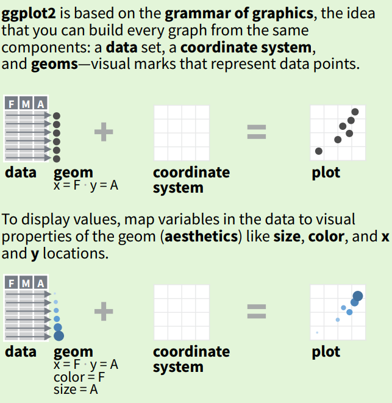
Gambar 3.1: Konsep ggplot2
Pada praktikum sebelumnya kita sudah mengidentifikasi ketimpangan antara jumlah mahasiswa UBL yang menjadi responden berdasarkan tingkat semester dan fakultas secara tabular. Dari Tabel 3.1 berikut, kita mendapatkan ide bahwa jumlah responden mahasiswa tingkat akhir cenderung dominan.
Characteristic |
N = 3791 |
|---|---|
tingkat_semester |
|
1 (Semester 1 – Semester 2) |
37 (9.8%) |
2 (Semester 3 – Semester 4) |
56 (15%) |
3 (Semester 5 - Semester 6) |
70 (18%) |
4 (Semester 7 - Semester 8) |
216 (57%) |
1n (%) | |
Akan tetapi, ide ini kita dapatkan dari angka di tabel saja. Bagaimana agar dominansi ini terasa lebih kuat idenya? Di sinilah pentingnya visualisasi. Dalam praktikum ini kita akan mempraktikkan pengolahan data menggunakan elemen visual dengan memanfaatkan paket ggplot2.
3.1 Mengimpor Library, Mengimpor Dataset dan Membersihkannya
Pertama, kita perlu memuat paket tidyverse yang sudah mencakup ggplot2 untuk visualisasi dan dplyr serta readr untuk manipulasi data.
Tak lupa, kita juga akan menyertakan openxlsx untuk membaca data berformat Excel.
Selanjutnya, kita akan mengimpor dataset kita, yakni hasil kuesioner kepada mahasiswa UBL., seperti halnya praktikum-praktikum sebelumnya.
# Mengeset variabel tersendiri untuk nama file nama sheet}
file_dibaca <- "datasets/Data Praktikum 03.xlsx"
sheet_ubl <- "DataUtama_mhsUBL"
# Mengimpor file menjadi dataset memanfaatkan variabel nama file dan nama sheet yang kita buat tadi
data_ubl <- read.xlsx(file_dibaca, sheet = sheet_ubl)
# Pengenalan fungsi baru: 'mengintip' sejumlah baris pertama dari dataset kita
head(data_ubl)## timestamp kampus_pt no_urut jenis_kelamin umur fakultas prodi tingkat_semester
## 1 45413.83 UBL 1 Perempuan 21 Fakultas Ilmu Sosial dan Politik Ilmu Komunikasi 4 (Semester 7 - Semester 8)
## 2 45413.83 UBL 2 Laki-Laki 20 Fakultas Hukum Ilmu Hukum 3 (Semester 5 - Semester 6)
## 3 45413.85 UBL 3 Laki-Laki 21 Fakultas Ekonomi dan Bisnis Manajemen 4 (Semester 7 - Semester 8)
## 4 45413.85 UBL 4 Laki-Laki 22 Fakultas Ekonomi dan Bisnis Akuntansi 4 (Semester 7 - Semester 8)
## 5 45413.88 UBL 5 Laki-Laki 21 Fakultas Ekonomi dan Bisnis Manajemen 4 (Semester 7 - Semester 8)
## 6 45413.92 UBL 6 Perempuan 21 Fakultas Ekonomi dan Bisnis Akuntansi 4 (Semester 7 - Semester 8)
## uang_saku kepemilikan_mobil kepemilikan_motor kepemilikan_sepeda moda
## 1 < 1 jt 1 2 1 Sepeda Motor Pribadi
## 2 1 jt – 2 jt 2 1 1 Mobil Pribadi
## 3 1 jt – 2 jt 1 2 2 Sepeda Motor Pribadi
## 4 1 jt – 2 jt 1 4 1 Kendaraan Bermotor (menumpang dengan keluarga/teman)
## 5 2,1 jt – 3 jt 4 4 1 Mobil Pribadi
## 6 1 jt – 2 jt 1 2 1 Transportasi Online
## kelurahan jenis_hunian nama_jalan jarak_km
## 1 Kalibalau Kencana Rumah pribadi/rumah keluarga eLBe Loundry 4.223797
## 2 Gunung sulah Rumah pribadi/rumah keluarga Jl.Urip Sumoharjo no 88 2.703331
## 3 langkapura Rumah pribadi/rumah keluarga JL DARUSSALAM GG LANGGAR LK II 3.237072
## 4 Bilabong JAYA JAYA JAYA Rumah pribadi/rumah keluarga Jl Darussalam bilabong bila bolong di jait dong 3.002336
## 5 sukarame Rumah pribadi/rumah keluarga jl.cendrawasih sukarame bandar lampung 5.961925
## 6 Way halim Rumah pribadi/rumah keluarga Jl P tabuan nomor 26 2.925331
## alasan_hunian biaya_ribu jml_trip_senin jml_trip_selasa jml_trip_rabu jml_trip_kamis
## 1 Bersama keluarga/saudara/teman 25.0 2 3 2 3
## 2 Mudahnya akses berpergian dari tempat tinggal 200.0 3 3 3 3
## 3 Bersama keluarga/saudara/teman 50.0 1 1 1 1
## 4 Lingkungan nyaman karna aman dari kejahatan 20.0 2 2 2 2
## 5 Dekat dengan fasilitas umum 93.5 1 1 1 1
## 6 Bersama keluarga/saudara/teman 40.0 3 3 1 1
## jml_trip_jumat jml_trip_sabtu jml_trip_ahad
## 1 2 2 2
## 2 3 3 3
## 3 1 1 1
## 4 2 2 2
## 5 1 1 1
## 6 1 1 1Kemudian kita perlu menetapkan factor untuk variabel-variabel kategoris kita agar data kita lebih ‘bersih.’
# Membersihkan missing values terlebih dahulu
data_ubl <- data_ubl |>
drop_na()
# Menetapkan vektor untuk factor variabel kategoris menggunakan count() dan pull()
jk_levels <- data_ubl|>
count(jenis_kelamin) |>
pull(jenis_kelamin)
fakultas_levels <- data_ubl |>
count(fakultas) |>
pull(fakultas)
prodi_levels <- data_ubl |>
count(prodi) |>
pull(prodi)
uang_saku_levels <- data_ubl |>
count(uang_saku) |>
pull(uang_saku)
tingkat_semester_levels <- data_ubl |>
count(tingkat_semester) |>
pull(tingkat_semester)
# Menerapkan baris unik tersebut menjadi factor ke dataset kita
data_ubl <- data_ubl |>
mutate(
jenis_kelamin = factor(jenis_kelamin, levels = jk_levels),
fakultas = factor(fakultas, levels = fakultas_levels),
prodi = factor(prodi, levels = prodi_levels),
tingkat_semester = factor(tingkat_semester,
levels = tingkat_semester_levels,
ordered = TRUE
),
uang_saku = factor(uang_saku, levels = uang_saku_levels, ordered = TRUE)
)Kita akan mengubah nilai kategori pada variabel tingkat_semester dan uang_saku agar lebih singkat dan lebih mudah terbaca saat divisualisasikan. Kita akan menggunakan fungsi fct_recode() dari forcats (bagian dari tidyverse) untuk mengubah nama factor-nya.
# Mengubah nama kategori factor untuk tingkat_semester
data_ubl <- data_ubl |>
mutate(
tingkat_semester = fct_recode(
tingkat_semester,
"Semester 1 & 2" = "1 (Semester 1 – Semester 2)",
"Semester 3 & 4" = "2 (Semester 3 – Semester 4)",
"Semester 5 & 6" = "3 (Semester 5 - Semester 6)",
"Semester 7 & 8" = "4 (Semester 7 - Semester 8)"
)
)
# Mengubah nama kategori factor untuk uang_saku
data_ubl <- data_ubl |>
mutate(
uang_saku = fct_recode(
uang_saku,
"<1" = "< 1 jt",
"1-2" = "1 jt – 2 jt",
"2-3" = "2,1 jt – 3 jt",
"3-4" = "3,1 jt – 4 jt",
">4" = "> 4 jt"
)
)Hampir mirip dengan saat kita menggunakan rename(Nama Baru = Nama Lama) sebelumnya, struktur formasi kode yang dimiliki oleh fct_recode() menerima argumen sebagai berikut: fct_recode(.f, "Level Baru" = "Level Lama") di mana .f adalah nama variabel (kolom) yang nilai-nilainya akan kita terjemahkan.
Jika kita mengecek urutan factor untuk uang_saku, kita akan mendapati bahwa urutannya salah.
# Mengecek urutan factor uang_saku
levels(data_ubl$uang_saku)## [1] "1-2" "2-3" "3-4" "<1" ">4"Kita akan memanfaatkan fungsi lain dari paket forcats bernama fct_relevel untuk memperbaiki urutan factor-nya.
# Mengubah urutan level uang_saku langsung ke datasetnya
data_ubl <- data_ubl |>
mutate(
uang_saku = fct_relevel(
uang_saku,
"<1"
)
)
# Mengecek hasil fct_relevel
levels(data_ubl$uang_saku)## [1] "<1" "1-2" "2-3" "3-4" ">4"Fungsi fct_relevel() memungkinkan kita memindahkan kategori mana pun ke posisi yang kita inginkan. Pada perintah di atas, kita memindahkan kategori <1 ke posisi pertama dengan hanya menyebutkan kategori tersebut. Cara ini jauh lebih praktis ketimbang kita menulis ulang seluruh urutan level factor-nya secara manual.
# Menampilkan hasil pembersihan data
glimpse(data_ubl)## Rows: 372
## Columns: 26
## $ timestamp <dbl> 45413.83, 45413.83, 45413.85, 45413.85, 45413.88, 45413.92, 45413.93, 45413.93, 45413.93, 45413.94, 45414…
## $ kampus_pt <chr> "UBL", "UBL", "UBL", "UBL", "UBL", "UBL", "UBL", "UBL", "UBL", "UBL", "UBL", "UBL", "UBL", "UBL", "UBL", …
## $ no_urut <dbl> 1, 2, 3, 4, 5, 6, 7, 8, 9, 10, 12, 13, 14, 15, 16, 17, 18, 19, 20, 21, 22, 23, 24, 25, 26, 27, 28, 29, 30…
## $ jenis_kelamin <fct> Perempuan, Laki-Laki, Laki-Laki, Laki-Laki, Laki-Laki, Perempuan, Perempuan, Perempuan, Laki-Laki, Peremp…
## $ umur <dbl> 21, 20, 21, 22, 21, 21, 22, 22, 22, 22, 22, 22, 22, 19, 22, 23, 22, 23, 22, 20, 19, 21, 22, 18, 20, 22, 2…
## $ fakultas <fct> Fakultas Ilmu Sosial dan Politik, Fakultas Hukum, Fakultas Ekonomi dan Bisnis, Fakultas Ekonomi dan Bisni…
## $ prodi <fct> Ilmu Komunikasi, Ilmu Hukum, Manajemen, Akuntansi, Manajemen, Akuntansi, Administrasi Publik, Administras…
## $ tingkat_semester <ord> Semester 7 & 8, Semester 5 & 6, Semester 7 & 8, Semester 7 & 8, Semester 7 & 8, Semester 7 & 8, Semester …
## $ uang_saku <ord> <1, 1-2, 1-2, 1-2, 2-3, 1-2, 1-2, <1, 1-2, 1-2, 1-2, 1-2, 1-2, <1, <1, 1-2, 2-3, <1, 2-3, 2-3, <1, <1, <1…
## $ kepemilikan_mobil <dbl> 1, 2, 1, 1, 4, 1, 1, 1, 1, 1, 0, 0, 1, 0, 0, 0, 0, 1, 1, 1, 2, 0, 0, 0, 0, 0, 2, 1, 1, 2, 1, 2, 1, 3, 2, …
## $ kepemilikan_motor <dbl> 2, 1, 2, 4, 4, 2, 1, 1, 1, 1, 2, 0, 1, 1, 1, 0, 1, 0, 2, 2, 1, 1, 0, 1, 0, 1, 3, 1, 3, 2, 2, 2, 2, 2, 2, …
## $ kepemilikan_sepeda <dbl> 1, 1, 2, 1, 1, 1, 1, 1, 1, 1, 0, 0, 0, 0, 0, 0, 0, 0, 0, 3, 1, 0, 0, 1, 0, 0, 3, 1, 0, 0, 0, 0, 0, 0, 1, …
## $ moda <chr> "Sepeda Motor Pribadi", "Mobil Pribadi", "Sepeda Motor Pribadi", "Kendaraan Bermotor (menumpang dengan ke…
## $ kelurahan <chr> "Kalibalau Kencana", "Gunung sulah", "langkapura", "Bilabong JAYA JAYA JAYA", "sukarame", "Way halim", "S…
## $ jenis_hunian <chr> "Rumah pribadi/rumah keluarga", "Rumah pribadi/rumah keluarga", "Rumah pribadi/rumah keluarga", "Rumah pr…
## $ nama_jalan <chr> "eLBe Loundry", "Jl.Urip Sumoharjo no 88", "JL DARUSSALAM GG LANGGAR LK II", "Jl Darussalam bilabong bila…
## $ jarak_km <dbl> 4.2237967, 2.7033310, 3.2370722, 3.0023362, 5.9619250, 2.9253306, 2.0588294, 12.0078709, 4.7355783, 6.741…
## $ alasan_hunian <chr> "Bersama keluarga/saudara/teman", "Mudahnya akses berpergian dari tempat tinggal ", "Bersama keluarga/sau…
## $ biaya_ribu <dbl> 25.0, 200.0, 50.0, 20.0, 93.5, 40.0, 70.0, 35.0, 50.0, 350.0, 50.0, 30.0, 30.0, 35.0, 50.0, 200.0, 40.0, …
## $ jml_trip_senin <dbl> 2, 3, 1, 2, 1, 3, 2, 4, 4, 3, 2, 0, 4, 2, 2, 2, 1, 1, 4, 4, 0, 0, 4, 2, 0, 5, 0, 0, 4, 2, 3, 3, 3, 4, 2, …
## $ jml_trip_selasa <dbl> 3, 3, 1, 2, 1, 3, 2, 4, 4, 3, 1, 1, 4, 1, 3, 3, 1, 1, 3, 1, 1, 1, 3, 4, 1, 5, 1, 1, 3, 3, 3, 3, 4, 3, 4, …
## $ jml_trip_rabu <dbl> 2, 3, 1, 2, 1, 1, 2, 4, 4, 3, 2, 1, 4, 3, 2, 4, 1, 1, 3, 1, 1, 1, 3, 3, 1, 5, 1, 1, 3, 2, 3, 1, 3, 2, 3, …
## $ jml_trip_kamis <dbl> 3, 3, 1, 2, 1, 1, 2, 4, 4, 3, 1, 1, 4, 3, 2, 2, 1, 1, 3, 1, 1, 1, 3, 3, 1, 5, 1, 2, 3, 1, 2, 4, 2, 3, 1, …
## $ jml_trip_jumat <dbl> 2, 3, 1, 2, 1, 1, 2, 4, 3, 3, 2, 1, 4, 3, 2, 3, 1, 1, 3, 1, 1, 1, 3, 3, 1, 5, 1, 1, 3, 1, 1, 1, 3, 2, 5, …
## $ jml_trip_sabtu <dbl> 2, 3, 1, 2, 1, 1, 2, 3, 4, 2, 1, 1, 1, 1, 2, 1, 1, 1, 3, 1, 1, 1, 3, 3, 1, 3, 1, 1, 3, 1, 4, 3, 3, 2, 3, …
## $ jml_trip_ahad <dbl> 2, 3, 1, 2, 1, 1, 2, 3, 4, 1, 1, 1, 1, 1, 1, 2, 1, 1, 3, 1, 1, 1, 3, 3, 1, 3, 1, 1, 1, 1, 1, 1, 1, 1, 1, …Aktivitas Mandiri 1: Persiapan Dataset ITERA
Untuk seluruh Aktivitas Mandiri di bawah ini, kita akan menggunakan data mahasiswa ITERA.
- Impor dataset dari
datasets/Data Praktikum 03.xlsxpada sheetDataUtama_mhsITERAdan simpan ke variabeldata_itera. - Lakukan pembersihan data seperti membuang missing values (
drop_na()). - Ubah nilai variabel ordinal jika perlu (seperti meringkas kategori
tingkat_semesterdanuang_saku). - Ubah variabel-variabel kategoris utama menjadi factor (termasuk urutannya jika ordinal), di antaranya:
fakultasmodajenis_hunianalasan_hunian
- Lakukan verifikasi dengan
glimpse(data_itera)untuk memastikan tipenya sudah tepat (<fct>atau<ord>).
Sekarang kita siap memvisualkan data kita.
3.2 Tata Tulis Grafik (Grammar of Graphics)
Setiap grafik ggplot2 terdiri dari beberapa komponen kunci:
- DATA: Dataset yang ingin kita visualisasikan.
-
MAPPING:
aes()(aesthetics), yang menghubungkan variabel dari data kita ke properti visual dari grafik (misalnya, sumbu x, sumbu y, warna, ukuran). -
GEOM_FUNCTION: Objek geometris yang merepresentasikan data (misalnya,
geom_point()untuk scatter plot,geom_bar()untuk diagram batang). -
STAT: Transformasi statistik. Setiap
geommemiliki statistik default (misalnya,geom_barsecara default menggunakanstat_count), tetapi kita bisa menentukannya secara manual. -
POSITION: Penyesuaian posisi untuk
geomyang tumpang tindih (misalnya,position_dodge()atauposition_stack()). -
COORDINATE_FUNCTION: Sistem koordinat yang digunakan (
coord_cartesian,coord_flip, dll.). -
FACET_FUNCTION: Membagi plot menjadi beberapa sub-plot berdasarkan variabel kategori (
facet_wrapataufacet_grid).
ggplot(<DATA>) +
<GEOM_FUNCTION>(mapping = aes(<MAPPING>),
stat = <STAT>,
position = <POSITION>) +
<COORDINATE_FUNCTION> +
<FACET_FUNCTION> +
<SCALE_FUNCTION> + # opsional
<THEME_FUNCTION> # opsional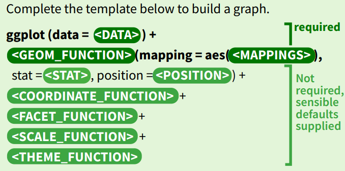
Gambar 3.2: Grammar of Graphics
3.3 Visualisasi Data Variabel Kategoris/Nominal-Ordinal
Pada bagian ini, kita akan memvisualkan data variabel kategoris/nominal-ordinal. Diagram-diagram yang paling tepat digunakan untuk memvisualkan data dengan variabel ini di antaranya adalah diagram batang beserta turunannya (diagram batang bertumpuk, diagram batang berjejer, diagram batang proporsi, dan diagram lolipop), diagram pai/donat, dan diagram treemap. Mengapa diagram-diagram ini paling tepat? Karena seluruh diagram tersebut memvisualkan frekuensi kategori yang ada dalam suatu variabel.
3.3.1 Diagram Batang Tunggal
Mari kita lihat distribusi mahasiswa berdasarkan tingkat semester. geom_bar() secara otomatis menghitung jumlah observasi untuk setiap kategori di sumbu x.
diagram_batang <- ggplot(data_ubl) +
geom_bar(
mapping = aes(x = tingkat_semester),
fill = "skyblue",
color = "black"
) +
labs(
title = "Distribusi Mahasiswa Berdasarkan Tingkat Semester",
x = "Tingkat Semester",
y = "Jumlah Mahasiswa"
) +
theme_minimal() +
theme(axis.text.x = element_text(angle = 45, hjust = 1)) # Rotasi label x agar tidak tumpang tindih
diagram_batang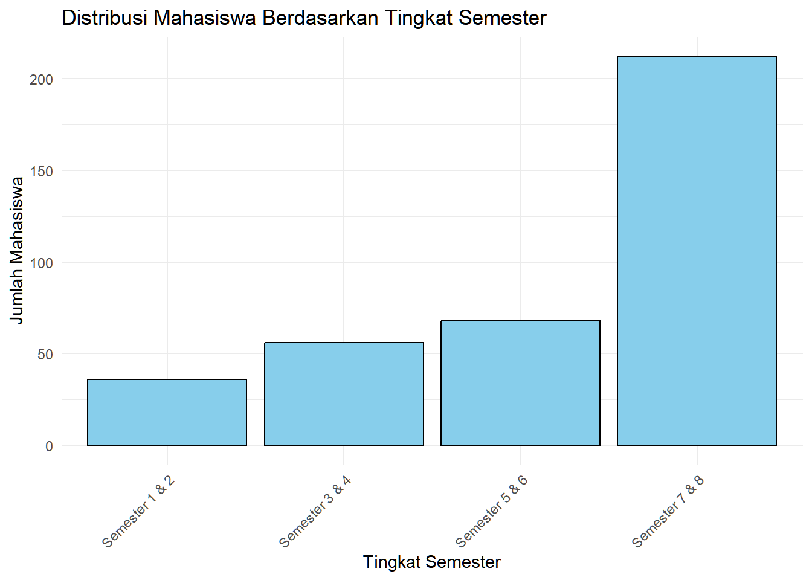
Gambar 3.3: Diagram Batang Tunggal Distribusi Semester
Penjelasan Sintaks (Grammar of Graphics):
-
DATA:
ggplot(data_ubl)mendefinisikan dataset yang digunakan. -
GEOM:
geom_bar(...)menentukan bentuk geometris yang digunakan, yaitu batang. -
MAPPING:
mapping = aes(x = tingkat_semester)memetakan variabeltingkat_semesterdari data ke sumbu x pada grafik. -
STAT:
geom_bar()secara default menggunakanstat = "count", yang berarti ia secara otomatis melakukan transformasi statistik dengan menghitung jumlah baris untuk setiap kategoritingkat_semesterdan menampilkannya sebagai ketinggian batang di sumbu y. -
fill = "skyblue", color = "black": Ini adalah pengaturan properti visual, bukan pemetaan. Kita mengatur semua batang agar memiliki warna isian “skyblue” dan garis tepi “black”. -
labs(...),theme_minimal(),theme(...): Ini adalah lapisan tambahan untuk kustomisasi label dan tema, bukan bagian inti dari “grammar”.
Interpretasi: Grafik batang yang dihasilkan menunjukkan bahwa frekuensi relatif mahasiswa tingkat akhir (Semester 7 & 8) sangat tinggi dibandingka kategori lainnya. Artinya, pemilihan responden agak bias ke mahasiswa tingkat akhir
3.3.2 Diagram Batang Bertumpuk (Stacked)
Pada diagram batang biasa kita menggunakan tingkat_semester sebagai mapping = aes(...) kita. Variabel lain seperti uang_saku bisa kita tambahkan ke dalam aes() tersebut dengan properti fill untuk membuat diagram batang bertumpuk. Ini akan menunjukkan proporsi uang saku di setiap tingkat semester.
diagram_batang_tumpuk <- ggplot(data_ubl) +
geom_bar(mapping = aes(x = tingkat_semester, fill = uang_saku)) +
labs(
title = "Distribusi Uang Saku per Tingkat Semester",
x = "Tingkat Semester",
y = "Jumlah Mahasiswa",
fill = "Uang Saku per Bulan"
) +
theme_minimal() +
theme(axis.text.x = element_text(angle = 45, hjust = 1))
diagram_batang_tumpuk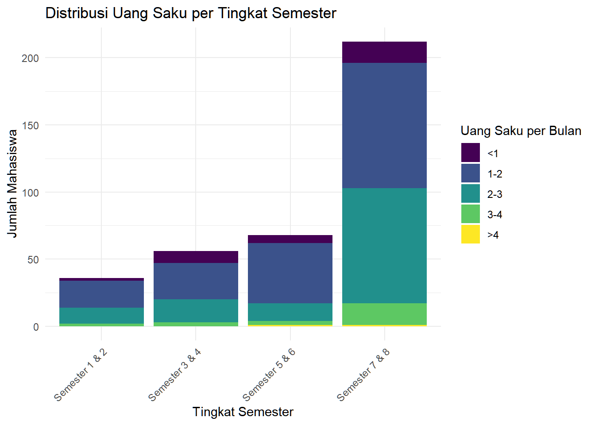
Gambar 3.4: Diagram Batang Bertumpuk Uang Saku
Penjelasan Sintaks (Grammar of Graphics):
-
MAPPING:
mapping = aes(x = tingkat_semester, fill = uang_saku)kini memiliki pemetaan tambahan. Selain sumbu x, kita juga memetakan variabeluang_sakuke properti visualfill(warna isian).ggplotakan membuat segmen berwarna berbeda di dalam setiap batang sesuai kategori uang saku. -
POSITION: Secara default,
geom_bar()menggunakanposition = "stack"ketikafilldipetakan ke sebuah variabel. Inilah yang menyebabkan segmen-segmen tersebut ditumpuk di atas satu sama lain. -
labs(fill = "Uang Saku per Bulan"): Argumenfilldi dalamlabs()berfungsi untuk mengubah judul dari legenda yang secara otomatis dibuat dari pemetaanfill.
Interpretasi: Dari grafik ini, kita bisa melihat komposisi uang saku di setiap angkatan. Misalnya, pada tingkat “Semester 5 & 6”, sebagian besar mahasiswa memiliki uang saku pada kategori 1-2. Hal ini kita ketahui dari perbandingan relatif tinggi porsi warna-warna dalam masing-masing batang.
Terkadang kita lebih tertarik pada perbandingan proporsi antar grup daripada jumlah absolutnya. Dengan mengubah position menjadi "fill", kita dapat membuat setiap batang memiliki tinggi yang sama (100%) dan menunjukkan persentase relatif dari setiap subgrup.
diagram_batang_tumpuk_100 <- ggplot(data_ubl) +
geom_bar(
mapping = aes(x = tingkat_semester, fill = uang_saku),
position = "fill"
) +
scale_y_continuous(labels = scales::percent) + # untuk mengubah satuan sumbu Y menjadi '%'
labs(
title = "Proporsi Uang Saku per Tingkat Semester",
x = "Tingkat Semester",
y = "Persentase",
fill = "Uang Saku per Bulan"
) +
theme_minimal() +
theme(axis.text.x = element_text(angle = 45, hjust = 1))
diagram_batang_tumpuk_100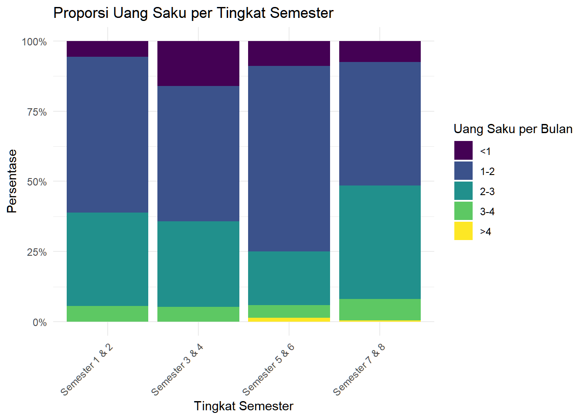
Gambar 3.5: Diagram Batang Proporsi (100%)
Penjelasan Sintaks (Grammar of Graphics):
POSITION: Komponen
positiondiubah menjadiposition = "fill". Pengaturan ini secara otomatis melakukan transformasi STAT yang berbeda: ia menghitung proporsi dari setiap subgrup (uang_saku) dalam setiap grup (tingkat_semester). Hasilnya adalah setiap batang dinormalisasi menjadi setinggi 1 (atau 100%).SCALE:
scale_y_continuous(labels = scales::percent)adalah lapisan tambahan yang mengontrol SKALA pada sumbu y. Fungsiscales::percentdigunakan untuk memformat label sumbu dari angka desimal (misal: 0.5) menjadi format persentase (misal: 50%) agar lebih mudah dibaca.
Interpretasi: Grafik ini menunjukkan bahwa secara proporsional, mahasiswa dengan kategori uang saku tertinggi (“>4”) yang paling dominan terdapat pada tingkat 3 (“Semester 5 & 6”). Sementara itu, mahasiswa kategori uang saku terrendah paling banyak porsinya pada tingkat 2 (“Semester 3 & 4”). Ini adalah wawasan yang mungkin tidak terlihat jelas pada grafik jumlah absolut.
3.3.3 Diagram Batang Berjejer
Untuk membandingkan jumlah absolut antar kategori uang saku, diagram batang berjejer lebih efektif. Kita gunakan position = "dodge".
diagram_batang_sebar <- ggplot(data_ubl) +
geom_bar(
mapping = aes(x = tingkat_semester, fill = uang_saku),
position = "dodge"
) +
labs(
title = "Perbandingan Uang Saku per Tingkat Semester",
x = "Tingkat Semester",
y = "Jumlah Mahasiswa",
fill = "Uang Saku per Bulan"
) +
theme_minimal() +
theme(axis.text.x = element_text(angle = 45, hjust = 1))
diagram_batang_sebar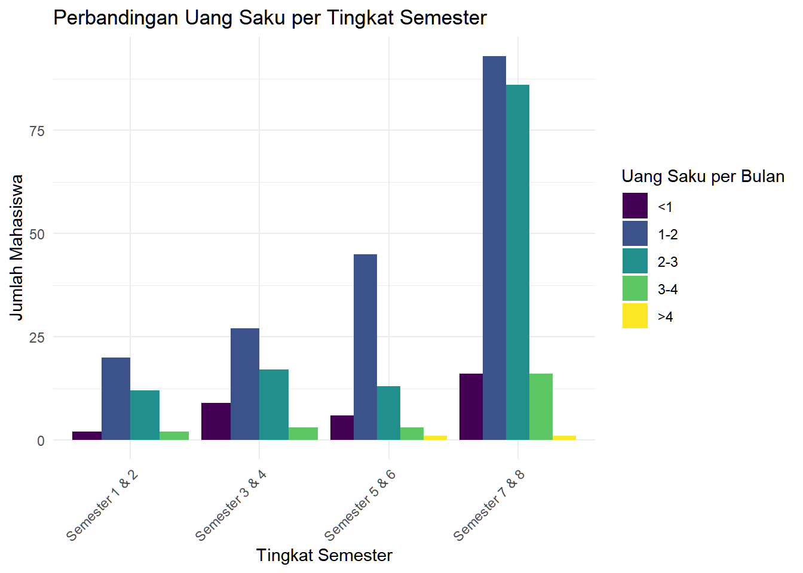
Gambar 3.6: Diagram Batang Berkelompok Uang Saku
Penjelasan Sintaks (Grammar of Graphics):
-
POSITION: Komponen
positiondiubah secara eksplisit menjadiposition = "dodge". Ini menginstruksikanggplotuntuk menempatkan batang-batang yang memiliki kategori x yang sama (misalnya, “Semester 5 & 6”) bersebelahan, bukan menumpuknya. Ini memungkinkan perbandingan langsung antar kategoriuang_saku.
Interpretasi: Grafik ini mempermudah perbandingan langsung. Terlihat jelas bahwa kategori uang saku “1-2” mendominasi di hampir semua tingkat semester.
Aktivitas Mandiri 2: Membuat dan Menginterpretasikan Diagram Batang STP-3.2, STP-3.3
Gunakan data_itera dan buatlah diagram batang untuk variabel fakultas:
-
Diagram batang sederhana - gunakan
geom_bar() -
Diagram batang bertumpuk dengan
uang_sakusebagai fill -
Diagram batang berkelompok dengan
position = "dodge"dan interpretasikan hasilnya:- Fakultas mana di ITERA yang paling banyak mahasiswa dengan uang saku tertinggi?
- Bagaimana pola distribusi uang saku antar fakultas?
- Apakah ada fakultas yang dominan memiliki mahasiswa dengan uang saku tertentu?
3.3.4 Diagram Lollipop
Diagram lolipop adalah alternatif dari diagram batang yang dapat mengurangi tinta visual dan memberikan penekanan lebih pada nilai data. Grafik ini menggunakan segmen garis dan titik untuk merepresentasikan nilai. Ini sangat efektif untuk menampilkan data kategoris yang banyak kategorinya.
# Pertama, kita perlu membuat tabel baru yang menampilkan jumlah mahasiswa per program studi
prodi_count <- data_ubl |>
count(prodi, name = "jumlah") |>
arrange(jumlah) |>
mutate(prodi = fct_inorder(prodi)) # mengubah jadi faktor terurut
# Kedua, kita baru bisa membuat diagram lollipop-nya
diagram_lollipop <- ggplot(prodi_count) +
# diagram lollipop terdiri atas 2 geometri: geom_segment yang bertindak sebagai
# batang dan geom_point yang bertindak sebagai permennya
geom_segment(
mapping = aes(
x = prodi,
y = 0, yend = jumlah
),
color = "grey",
size = 1.5
) +
geom_point(
mapping = aes(x = prodi, y = jumlah),
color = "#0072B2", size = 4
) +
coord_flip() + # Membalik sumbu agar mudah dibaca
labs(
title = "Jumlah Responden Mahasiswa UBL Per Program Studi",
x = "Program Studi",
y = "Jumlah Responden"
) +
theme(
panel.grid.major.y = element_blank(),
panel.border = element_blank(),
axis.ticks.y = element_blank()
)
diagram_lollipop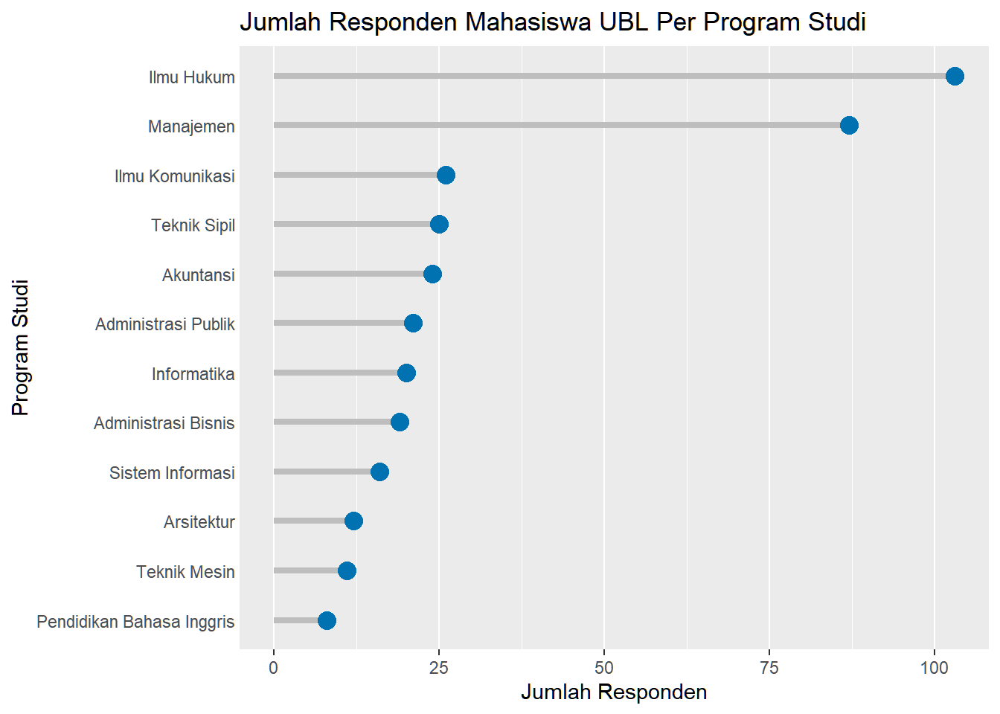
Gambar 3.7: Diagram Lollipop Responden per Prodi
Penjelasan Sintaks (Grammar of Graphics):
-
DATA & STAT: Sama seperti contoh sebelumnya, kita melakukan pra-pemrosesan data menggunakan
dplyr. Kita mengelompokkan data berdasarkanprodi, menghitung (count) jumlahnya, mengurutkan (arrange), dan yang terpenting, mengubahprodimenjadi variabel faktor yang terurut (fct_inorder) agar plot ditampilkan sesuai urutan yang kita inginkan. -
GEOM & MAPPING (Layering): Di sinilah keunikan diagram lolipop. Kita menggunakan dua lapisan
geom:-
geom_segment(): Digunakan untuk membuat “batang” atau segmen garis. Mapping-nya membutuhkan empat estetika:xdanxend(yang sama untuk garis vertikal) sertay(titik awal, yaitu 0) danyend(titik akhir, yaitujumlah). -
geom_point(): Digunakan untuk membuat “permen” atau titik di ujung segmen. Mapping-nya lebih sederhana, hanya membutuhkanxdany.
-
-
KOORDINAT:
coord_flip()digunakan untuk membalik sumbu, membuat diagram lolipop horizontal yang seringkali lebih mudah dibaca label kategorinya. - THEME: Lapisan tema digunakan untuk membersihkan tampilan, seperti menghilangkan beberapa garis grid dan batas panel untuk menonjolkan data itu sendiri.
Interpretasi: Grafik ini menunjukkan bahwa kebanyakan responden berasal dari program studi Ilmu Hukum dan Manajemen, dengan perbandingan yang cukup timpang dengan prodi-prodi lain. Selain itu, terlihat pula adanya sebaran kecil responden dari program studi lain seperti Ilmu Komunikasi dan Teknik Sipil.
Aktivitas Mandiri 3: Membuat Diagram Lollipop STP-3.2, STP-3.3
Gunakan data_itera dan buatlah diagram lollipop untuk variabel prodi:
- Buat tabel frekuensi
prodi_count_iteradaridata_iteramenggunakancount(prodi, name = "jumlah"). - Gunakan
mutate(prodi = fct_reorder(prodi, jumlah))agar batang lollipop terurut berdasarkan jumlahnya. - Buat diagram lollipop dengan menggabungkan
geom_segment()dangeom_point(). - Gunakan
coord_flip()agar nama program studi yang panjang dapat terbaca dengan baik. - Interpretasikan: Program studi mana di ITERA yang memiliki jumlah responden paling sedikit?
3.3.5 Diagram Pai/Donat (Pie/Donut Chart)
Diagram pai (dan variasinya, diagram donat) digunakan untuk menunjukkan proporsi dari sebuah keseluruhan. Meskipun populer, diagram pai seringkali sulit untuk dibaca secara akurat, terutama ketika ada banyak irisan atau ukurannya mirip. Diagram donat sedikit lebih baik karena mengurangi penekanan pada sudut dan lebih fokus pada panjang busur.
Di ggplot2, diagram pai dibuat dengan memulai dari diagram batang bertumpuk, lalu mengubah sistem KOORDINAT-nya menjadi koordinat polar. Akan tetapi, dalam ggplot2 kita tidak bisa membuat diagram pai langsung dari datasetnya, tetapi kita harus membentuk tabel distribusi frekuensinya terlebih dahulu.
fakultas_count <- data_ubl |>
count(fakultas, name = "jumlah") |> # Membuat kolom jumlah responden per fakultas
mutate(
persen = jumlah / sum(jumlah) # Membuat kolom persentase dari 'jumlah
)
fakultas_count## fakultas jumlah persen
## 1 Fakultas Ekonomi dan Bisnis 118 0.31720430
## 2 Fakultas Hukum 103 0.27688172
## 3 Fakultas Ilmu Komputer 34 0.09139785
## 4 Fakultas Ilmu Sosial dan Politik 59 0.15860215
## 5 Fakultas Keguruan dan Ilmu Pendidikan 8 0.02150538
## 6 Fakultas Teknik 50 0.13440860Baru kemudian kita bisa menghasilkan perintah ggplot untuk membuat diagram pai-nya.
diagram_pai <- ggplot(fakultas_count, aes(x = 2, y = persen, fill = fakultas)) +
geom_bar(stat = "identity", color = "white") +
coord_polar(theta = "y", start = 0) +
labs(
title = "Sebaran Fakultas Responden Mahasiswa UBL",
fill = "Fakultas"
) +
# Membersihkan tema
theme_void() +
theme(legend.position = "right")
diagram_pai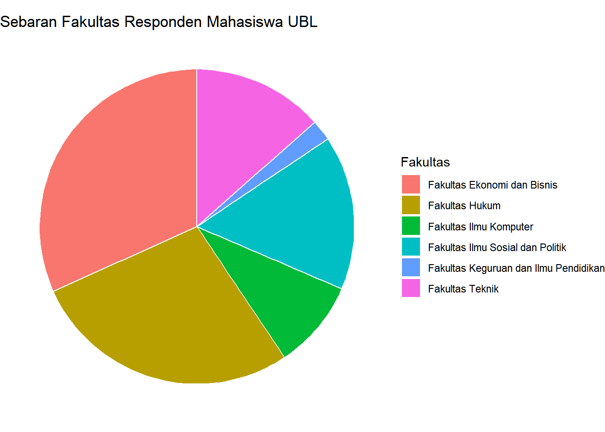
Gambar 3.8: Diagram Pai Sebaran Fakultas
Penjelasan Sintaks (Grammar of Graphics):
-
DATA & STAT: Kita menggunakan data
alasan_countsyang sudah diagregasi, lalu menambahkan kolom baru untuk persentase (persen) dan posisi vertikal untuk label (posisi_y_label). -
GEOM & MAPPING: Kita mulai dengan
geom_bar(stat = "identity")yang membuat diagram batang di mana tinggi batang (y) adalah nilai persentase itu sendiri.x=2adalah trik untuk membuat satu batang tunggal yang akan kita “lilit”. -
KOORDINAT:
coord_polar(theta = "y")adalah komponen kunci. Ini mengambil diagram batang dan mengubah sistem koordinatnya dari Kartesius (x,y) menjadi Polar. Sumbu y “dibengkokkan” menjadi sebuah lingkaran. -
theme_void(): Menghilangkan semua elemen tema seperti sumbu, label sumbu, dan latar belakang, yang tidak relevan untuk diagram pai/donat.
Interpretasi: Diagram ini menunjukkan proporsi dari setiap fakultas. Terlihat jelas bahwa irisan “Fakultas Ekonomi dan Bisnis” dan “Fakultas Hukum” mendominasi porsi responden mahasiswa UBL.
Kita bisa menambahkan lubang di tengah pai dengan menambahkan xlim(0.5, 2.5) yang merupakan batas dalam dan batas luar dari radius si diagram seperti berikut.
diagram_donat <- diagram_pai + xlim(0.5, 2.5)
diagram_donat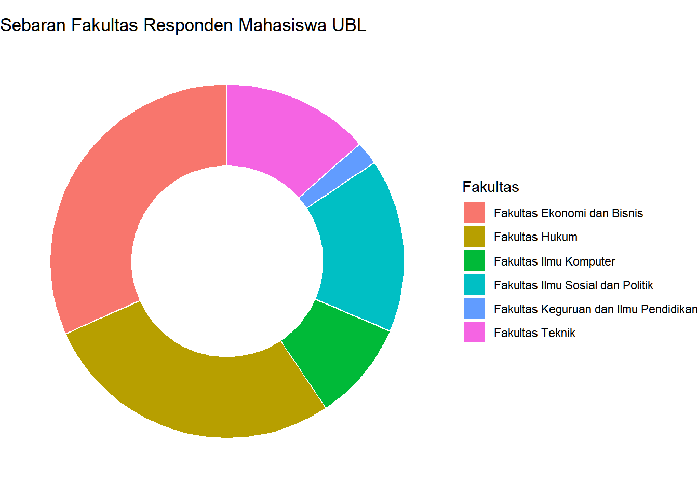
Gambar 3.9: Diagram Donat Sebaran Fakultas
⚠️Penting
Komunitas perupa data pada dasarnya menganjurkan kita untuk ‘menghindari’ diagram lingkaran. Hal ini bisa kalian baca di laman ini. Alternatifnya, mereka lebih menyarankan kita untuk menggunakan diagram batang atau diagram lollipop saja
Aktivitas Mandiri 4: Membuat Diagram Pai dan Donat STP-3.2, STP-3.3
Gunakan data_itera untuk memvisualisasikan variabel moda:
- Buat tabel frekuensi untuk variabel
modadan hitung persentase dari masing-masing kategori. - Buat diagram pai menggunakan
coord_polar(theta = "y"). - Modifikasi diagram pai tersebut menjadi diagram donat dengan menambahkan
xlim(). - Diskusi: Menurut Anda, apakah diagram donat lebih efektif dalam menyajikan informasi porsi kategori dibandingkan diagram batang proporsi? Jelaskan alasan Anda.
3.3.6 Diagram Treemap
Treemap adalah alternatif lain untuk diagram pai, terutama efektif ketika kita memiliki banyak kategori. Treemap menampilkan data hierarkis atau bagian-ke-keseluruhan sebagai satu set persegi panjang bersarang. Ukuran setiap persegi panjang sebanding dengan nilainya.
Untuk membuat treemap, kita perlu paket tambahan yaitu treemapify.
# Pastikan paket sudah terinstall: install.packages("treemapify")
# install.packages("treemapify")
library(treemapify)Kita akan membuat treemap dari alasan mahasiswa memilih tempat tinggal mereka
# Pertama, kita siapkan data dengan menghitung jumlah dan mengurutkannya
alasan_counts <- data_ubl |>
# Mengganti nama yang terlalu panjang agar muat di plot
mutate(alasan_singkat = fct_recode(alasan_hunian,
"Bersama Keluarga" = "Bersama keluarga/saudara/teman",
"Dekat Kampus/lokasi lain" = "Dekat dengan kampus",
"Dekat Kampus/lokasi lain" = "Dekat dengan fasilitas umum",
"Dekat Kampus/lokasi lain" = "Mudahnya akses berpergian dari tempat tinggal ",
"Fasilitas Lengkap" = "Fasilitas tempat tinggal lengkap",
"Murah" = "Biaya tempat tinggal murah",
"Aman" = "Lingkungan nyaman karna aman dari kejahatan"
)) |>
count(alasan_singkat, name = "jumlah")
alasan_counts## alasan_singkat jumlah
## 1 Bersama Keluarga 264
## 2 Murah 22
## 3 Dekat Kampus/lokasi lain 49
## 4 Fasilitas Lengkap 1
## 5 Lain-lain 2
## 6 Aman 34
ggplot(alasan_counts, aes(area = jumlah, fill = alasan_singkat, label = alasan_singkat)) +
geom_treemap() +
geom_treemap_text(
colour = "white",
place = "centre",
size = 13
) +
labs(
title = "Proporsi Alasan Mahasiswa Memilih Tempat Tinggal (Treemap)",
fill = "Alasan utama"
) +
theme(legend.position = "bottom") # Untuk menampilkan area yang tidak ada labelnya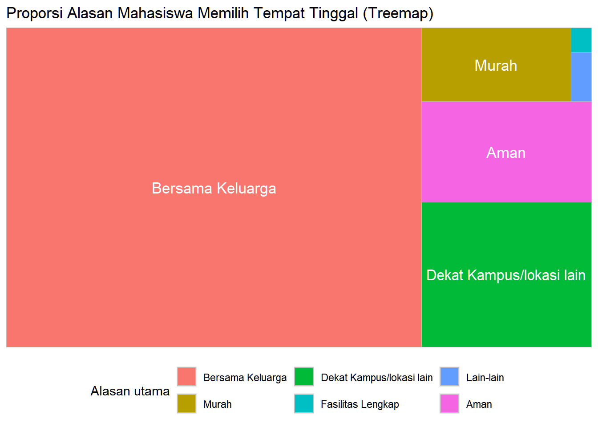
Gambar 3.10: Treemap Alasan Tempat Tinggal
Penjelasan Sintaks (Grammar of Graphics):
-
DATA: Kita menggunakan data
alasan_countsyang sudah diagregasi. -
GEOM & MAPPING: Paket
treemapifymenyediakangeombaru yang terintegrasi denganggplot2.-
geom_treemap(): Ini adalahgeomutama. Alih-alihxdany, MAPPING utamanya adalahaes(area = jumlah).ggplotakan secara otomatis menghitung tata letak persegi panjang berdasarkan nilaijumlah. Kita juga memetakanalasan_singkatkefilluntuk warna danlabeluntuk teks. -
geom_treemap_text(): Ini adalahgeomtambahan khusus untuk menempatkan teks di dalam setiap area treemap.
-
-
THEME: Kita bisa menyembunyikan legenda karena setiap area sudah diberi label secara langsung, sehingga legenda menjadi berlebihan. Caranya adalah mengatur nilai
bottom =menjadi"none". Akan tetapi, untuk kasus kita, kita punya area yang terlalu kecil untuk diberi label, sehingga kita tetap tampilkan legenda.
Interpretasi: Treemap ini menunjukkan bahwa alasan utama mahasiswa memilih tempat tinggal adalah karena “Bersama Keluarga” dan “Dekat Kampus/lokasi lain”. Penggunaan luas area memudahkan kita melihat perbedaan dominansi alasan secara visual tanpa harus membaca angka satu per satu.
Aktivitas Mandiri 5: Membuat Diagram Treemap STP-3.2, STP-3.3
Gunakan variabel alasan_hunian dari data_itera:
- Lakukan pembersihan atau penyederhanaan nama kategori (rekoding) jika dirasa terlalu panjang agar pas di dalam kotak treemap.
- Buat diagram treemap menggunakan
geom_treemap(). - Tambahkan label teks di tengah kotak menggunakan
geom_treemap_text(). - Interpretasikan: Identifikasi tiga alasan utama yang mendasari mahasiswa ITERA memilih tempat tinggalnya.
3.4 Visualisasi Data Variabel Numerik/Interval Rasio
Perbedaan utama diagram yang memvisualkan variabel kategoris dan numerik terletak pada angka yang divisualkan: diagram untuk variabel kategorik memvisualkan frekuensi kategori dalam variabel, sementara diagram untuk variabel numerik memvisualkan nilai variabel tersebut. Diagram-diagram yang akan kita pelajari untuk memvisualkan data variabel numerik di antaranya adalah diagram histogram, boxplot, dan scatterplot.
3.4.1 Histogram
Histogram digunakan untuk melihat distribusi dari variabel numerik/kontinu, seperti umur. Tidak seperti diagram batang, sumbu X histogram menampilkan nilai-nilai dari variabel umur, sementara sumbu Y menampilkan frekuensi data yang memiliki nilai-nilai di sumbu X tersebut.
Setiap objek dikelompokkan ke dalam bin yang dapat diatur lebarnya. Lebar bin menunjukkan rentang nilai yang dicakup.
histogram <- ggplot(data_ubl) +
geom_histogram(mapping = aes(x = umur), binwidth = 1, fill = "darkseagreen", color = "white") +
labs(
title = "Distribusi Umur Mahasiswa",
x = "Umur (Tahun)",
y = "Frekuensi"
) +
theme_minimal()
histogram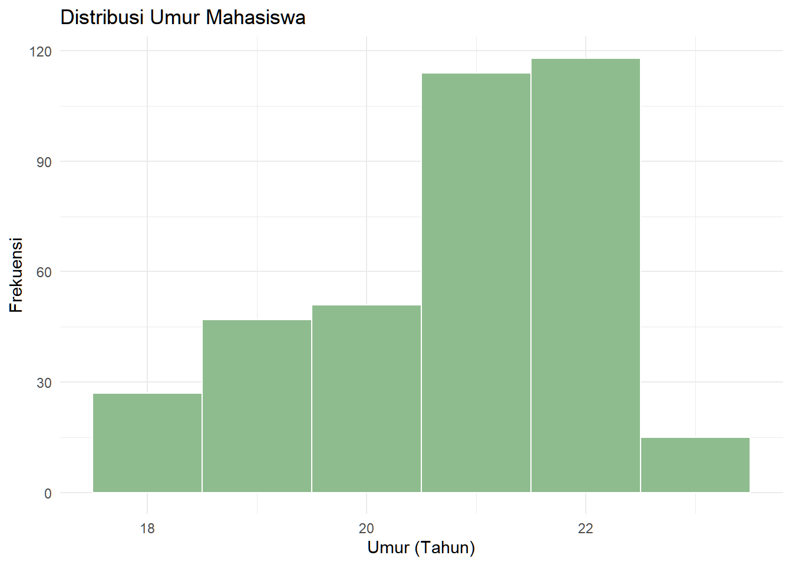
Gambar 3.11: Histogram Distribusi Umur
Penjelasan Sintaks (Grammar of Graphics):
-
DATA:
ggplot(data_ubl)mendefinisikan dataset. -
GEOM:
geom_histogram(...)menentukan bentuk geometris berupa histogram. -
MAPPING:
mapping = aes(x = umur)memetakan variabel numerikumurke sumbu x. -
STAT:
geom_histogrammemilikistat = "bin"sebagai defaultnya. Transformasi statistik ini akan membagi dataumurke dalam beberapa rentang (bins) yang lebarnya diatur olehbinwidth = 1, lalu menghitung frekuensi data di setiap rentang tersebut untuk ditampilkan di sumbu y.
3.4.2 Boxplot
Box plot berguna untuk membandingkan distribusi variabel numerik di antara beberapa grup/kategori. Mari kita bandingkan distribusi jarak tempat tinggal (jarak_km) untuk setiap jenis kendaraan utama.
Anatomi boxplot sudah diajarkan di kelas dan dapat dibaca di buku ajar. Silakan acu buku ajar yang sudah disebarkan.
boxplot <- ggplot(data_ubl) +
geom_boxplot(mapping = aes(x = moda, y = jarak_km, fill = moda)) +
coord_flip() + # Membalik sumbu agar label mudah dibaca
labs(
title = "Distribusi Jarak Tempat Tinggal Berdasarkan Kendaraan Utama",
x = "Kendaraan Utama",
y = "Jarak dari Kampus (km)"
) +
theme_minimal() +
theme(legend.position = "none") # Menghilangkan legenda karena sudah ada di sumbu
boxplot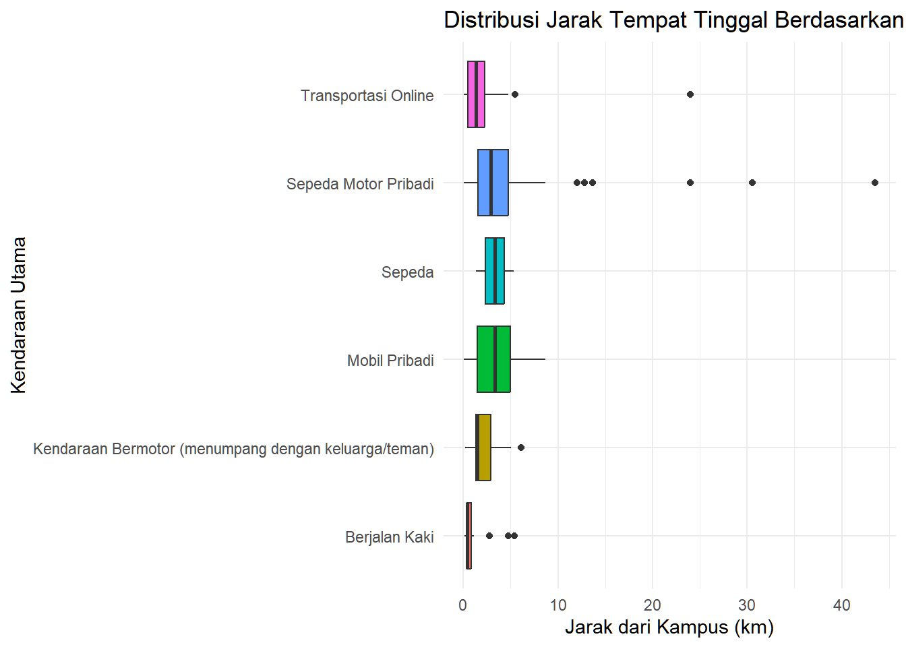
Gambar 3.12: Boxplot Jarak per Moda
Penjelasan Sintaks (Grammar of Graphics):
DATA:
ggplot(data_ubl)mendefinisikan dataset.GEOM:
geom_boxplot(...)menentukan bentuk geometris berupa diagram kotak.MAPPING:
mapping = aes(x = moda, y = jarak_km, fill = moda)memetakan tiga hal: variabel kategorimodake sumbu x, variabel numerikjarak_kmke sumbu y, danmodake warna isianfill.STAT:
geom_boxplotsecara default menggunakanstat_boxplot, yang menghitung ringkasan lima angka (minimum, Q1, median, Q3, maksimum) untuk setiap grup di sumbu x.KOORDINAT:
coord_flip()secara eksplisit mengubah sistem koordinat dengan membalik sumbu x dan y. Ini adalah komponen terpisah yang diterapkan setelah komponen lainnya.theme(legend.position = "none"): Kustomisasi lapisan tema untuk menyembunyikan legenda.
Interpretasi: Box plot ini menunjukkan bahwa mahasiswa yang menggunakan mobil pribadi cenderung memiliki rentang jarak tempat tinggal yang sedikit lebih beragam (IQR lebih tinggi) dan median yang sedikit lebih tinggi dibandingkan pengguna sepeda motor. Sejalan dengan intuisi, mahasiswa yang berjalan kaki memiliki median jarak yang paling rendah dibandingkan kategori moda transportasi lainnya.
Seperti yang kita lihat, titik-titik pencilan membuat kita sulit menginterpretasi grafik kita. Kita dapat mengolah data kita kembali untuk menghilangkan pencilan tersebut. Caranya adalah mem-filter() objek sehingga yang terpilih hanya objek dengan nilai di antara “pagar” \(Q1 - 1,5 \times \text{IQR}\) dan \(Q3 + 1,5 \times \text{IQR}\).
# 1. Menentukan Batas IQR
Q1 <- quantile(data_ubl$jarak_km, .25)
Q3 <- quantile(data_ubl$jarak_km, .75)
IQR_val <- Q3 - Q1
# 2. Memfilter Outlier
data_ubl_clean <- data_ubl |>
filter(jarak_km >= (Q1 - 1.5 * IQR_val) & jarak_km <= (Q3 + 1.5 * IQR_val))
# 3. Plotting Kembali
ggplot(data_ubl_clean) +
geom_boxplot(mapping = aes(x = moda, y = jarak_km, fill = moda)) +
coord_flip() +
labs(
title = "Distribusi Jarak (Tanpa Outlier)",
x = "Kendaraan Utama",
y = "Jarak (km)"
) +
theme_minimal() +
theme(legend.position = "none")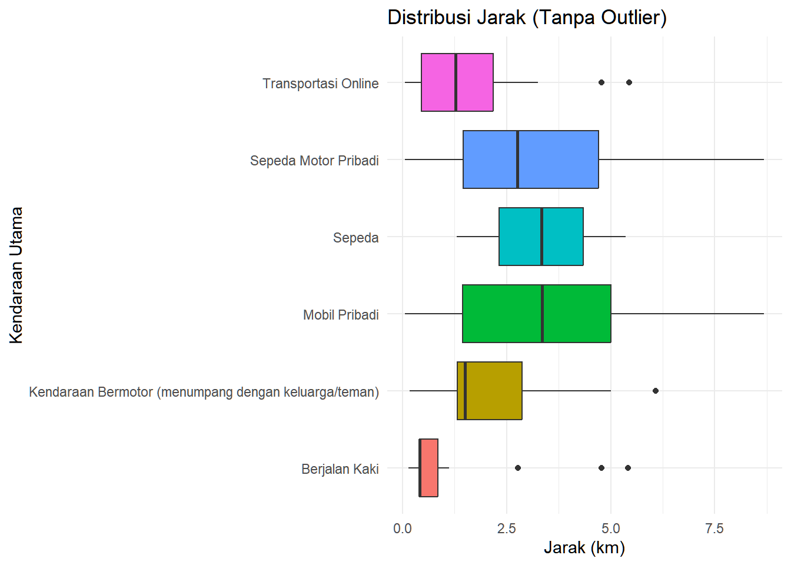
Gambar 3.13: Boxplot Setelah Pembersihan Outlier
Penjelasan Sintaks:
-
Mencari Kuartil: Fungsi
quantile(data$kolom, .25)digunakan untuk mencari nilai Q1 (persentil ke-25) dan.75untuk Q3. -
Filter Logika: Kita menggunakan
filter()dengan operator&(dan) untuk memastikan data yang diambil hanya yang berada di dalam rentang normal (tidak lebih kecil dari pagar bawah dan tidak lebih besar dari pagar atas).
3.4.3 Grafik Pencar (Scatterplot)
Scatter plot ideal untuk melihat hubungan antara dua variabel numerik. Mari kita lihat hubungan antara umur dan jarak_km tempat tinggal.
scatter_plot <- ggplot(data_ubl) +
geom_point(mapping = aes(x = umur, y = jarak_km), alpha = 0.6, color = "darkblue") + # alpha untuk transparansi
labs(
title = "Hubungan Antara Umur dan Jarak Tempat Tinggal",
x = "Umur (Tahun)",
y = "Jarak dari Kampus (km)"
) +
theme_minimal()
scatter_plot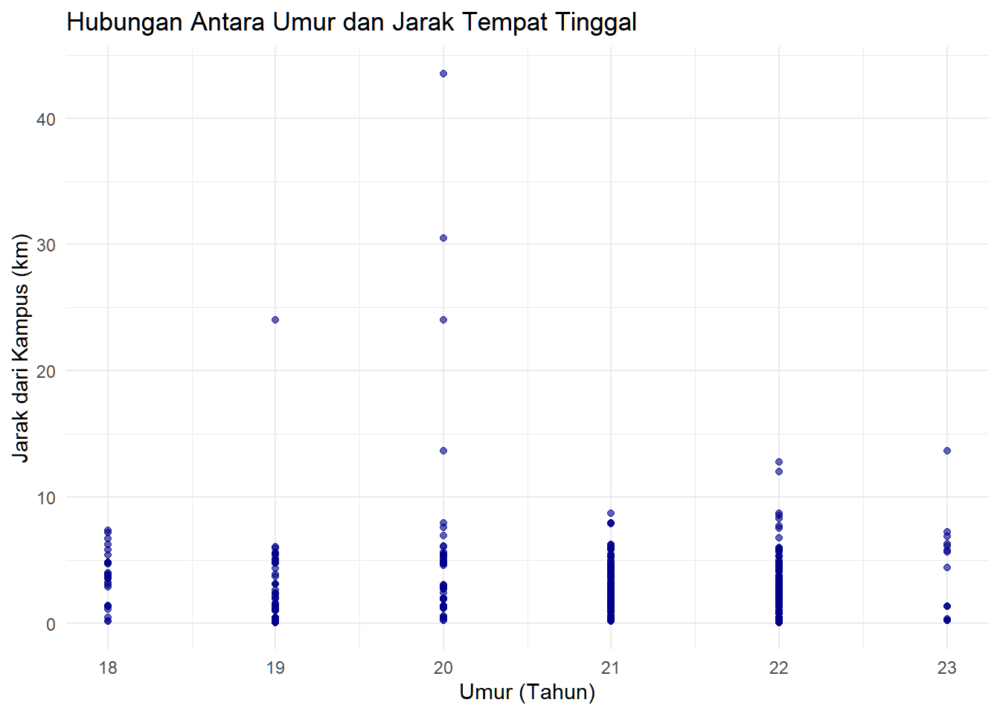
Gambar 3.14: Scatter Plot Umur vs Jarak
Penjelasan Sintaks (Grammar of Graphics):
-
DATA:
ggplot(data_ubl)mendefinisikan dataset. -
GEOM:
geom_point(...)menentukan bentuk geometris berupa titik. -
MAPPING:
mapping = aes(x = umur, y = jarak_km)memetakan dua variabel,umurke sumbu x danjarak_kmke sumbu y. Setiap baris data akan menjadi satu titik pada plot. -
alpha = 0.6dancolor = "darkblue"adalah pengaturan properti visual untuk semua titik.
Interpretasi: Grafik ini tidak menunjukkan adanya pola atau hubungan yang jelas antara umur mahasiswa dan jarak tempat tinggal mereka dari kampus. Titik-titik tersebar secara acak, yang mengindikasikan bahwa umur bukan merupakan faktor penentu utama bagi mahasiswa dalam memilih lokasi tempat tinggal.
Penting untuk menjaga konteks dalam interpretasi. Meskipun secara teoretis mungkin ada anggapan bahwa mahasiswa yang lebih senior memiliki preferensi hunian tertentu, data kita menunjukkan bahwa sebarannya merata di berbagai kelompok umur. Untuk benar-benar memahami kekuatan hubungan ini, kita perlu menggunakan statistik korelasi (akan dipelajari di modul selanjutnya).
Aktivitas Mandiri 6: Visualisasi Komprehensif untuk biaya_ribu STP-3.2, STP-3.3
Gunakan data_itera:
A. Menghasilkan Grafik STP-3.3:
- Buat histogram untuk
biaya_ribu- Coba beberapa nilai
binwidth(misal: 20, 50, atau 100) dan pilih yang paling informatif - Tambahkan judul dan label sumbu yang jelas
- Coba beberapa nilai
- Buat boxplot untuk
biaya_ribuberdasarkanmoda- Gunakan
geom_boxplot()denganfillberdasarkan kendaraan - Tambahkan label yang jelas
- Gunakan
- Buat scatter plot untuk
umurvsbiaya_ribu- Tambahkan
geom_point()denganalpha = 0.5untuk transparansi - Pertimbangkan menambahkan
geom_smooth(method = "lm")untuk melihat trend
- Tambahkan
B. Interpretasi Mendalam STP-3.2:
-
Dari histogram no.1:
- Berapa rentang biaya yang paling sering muncul (modus)?
- Apakah distribusinya simetris, menceng kanan, atau menceng kiri?
- Apakah ada outlier (nilai ekstrem)?
-
Dari boxplot no.2:
- Kendaraan apa yang memiliki median biaya tertinggi?
- Kendaraan apa yang paling bervariasi biayanya (IQR terbesar)?
- Apakah ada outlier? Pada jenis kendaraan apa?
-
Dari scatter plot no.3:
- Apakah ada pola hubungan antara umur dan biaya transportasi?
- Jika ada trend line, apakah slopenya positif atau negatif?
- Apa interpretasi kontekstualnya?
C. Dokumentasi STP-3.3:
- Kumpulkan file modul ini dengan:
- Seluruh kode diagram yang sudah kita buat di modul ini
- Seluruh interpretasi dan analisis untuk setiap diagram
- Screenshot atau output grafik yang sudah dihasilkan
Aktivitas Mandiri 7: Pemilihan Visualisasi dan Tingkat Pengukuran STP-3.1, STP-3.4
-
Mengapa histogram cocok untuk
biaya_ribu?- Jelaskan kaitannya dengan tingkat pengukuran variabel (metrik/rasio)
- Informasi apa yang bisa diperoleh dari histogram? (distribusi, spread, outlier)
-
Apakah scatter plot cocok untuk
jenis_kelaminvsumur? Mengapa tidak?- Jelaskan kaitannya dengan tingkat pengukuran variabel
- Diagram apa yang lebih sesuai untuk membandingkan umur berdasarkan jenis kelamin?